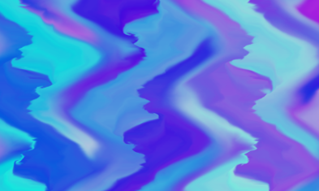
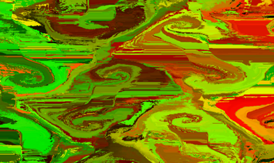

Final Report and Deliverables
Abstract
Our project consisted of generating a 2D-Fluid simulation which was rendered in real-time inside of a browser window. To accomplish this project, we utilized WebGL, which is supported by most modern browsers, and implemented the Navier-Stokes equations for non-compressible fluids as shader programs so that the calculations for the fluid simulation were performed entirely on the GPU. Our implementation initializes the rendering canvas of the browser window with a 2D velocity map and 2D dye map which are stored in textures on the GPU and modified accordingly to render the fluid behavior at each time step onto the visible canvas. The velocity map is used to advect the dye map, producing the colored fluid results in the browser window, and separate fragment shader programs are used to update the velocity map for each time step, simulating the behavior of non-compressible fluids. You can view a live demo of the simulation rendering in your browser by clicking here. If the simulation is running slowly (as is the case with older graphics hardware), try decreasing the size of your browser window.
Technical Approach
The Navier-Stokes Equations:
To perform a 2D simulation of non-compressible fluids within the browser, we implemented the Navier-Stokes equations for incompressible flow defined by the following equations:
The equations used were sourced from NVIDIA GPU Gems Chapter 38 - Fast Fluid Dynamics Simulation on the GPU. In the equations, u is the velocity vector consisting of an x velocity and a y velocity, represents the density of a fluid, is the viscosity of the fluid, and Fis a vector accounting for external forces on the fluid. The first equation listed (we will refer to it as the velocity update equation) shows how the various accelerations, such as advection, pressure, diffusion, and external forces, are used to determine each of the velocity values in a velocity map for the next time step. The second equation is an expression which defines a restriction for the non-compressible fluid simulation which is simply that the divergence of the velocity map should be 0 since it would not make sense observing a simulation where a fluid is being transported in completely opposite directions while also being adjacent to the other stream of fluid being transported.
Implementation:
In our implementation, we divided the Navier-Stokes velocity update equation into five smaller components which consisted of advecting the velocity map, computing the divergence for each velocity, updating the pressure map values using Jacobi iteration, subtracting the pressure gradients from the velocity map to compute the new velocity values for the next time step, and finally advecting the dye with the new velocity map to visualize the fluid simulation. These steps were decomposed into five different shader programs each of which had their own fragment shader but all shared the same vertex shader. The vertex shader drew two triangles to cover the entire screen and had varying uv coordinates computed such that the fragment shaders would utilize interpolated uv coordinates across the texture coordinate space. The different fragment shaders implemented the necessary computations to perform advection, calculate divergence, update the pressure values, compute the next time step’s velocity map, and appropriately display the advected colors of the dye used to visualize the simulation onto the browser’s canvas. Below is a visualization of the computation process for each frame in the simulation.
The actual data being used for each stage of the computations is stored in 2D textures from which the fragment shaders can read and write values. For our implementation, we used 2 textures for the velocity map, 1 texture for the divergence map, 2 textures for the pressure map, and 2 textures for the dye map. With the exception of the divergence map, we utilize two textures for velocity, dye, and pressure since calculations involving these values require data to be read from the previous state and new data to be written for the next time step state. Thus, we ping pong between the textures when rendering each frame of the simulation, reading from one texture and writing the new values to the other texture. Only 1 texture was used for divergence, since it is recalculated anew at every time step without needing to know its previous values. Much like the two velocity and dye textures were used to read the previous state’s values while writing the next state’s computed values, the two pressure textures were utilized to perform Jacobi iteration to approximate the Poisson distribution and estimate the pressure values for the next time step.
There were a couple of simplifying modifications we made to the Navier-Stokes velocity update equation in order to maintain a high resolution simulation that was still rendered in real-time. First, we did not allow Jacobi iteration to continue until the pressure values converged since doing so can sometimes result in a large number of iterations being performed to compute the new pressure values, slowing the simulation down. Instead, we set the number of iterations performed to be finite with descent results across a broad range of computing hardware. A second simplifying assumption we made was that the kinematic viscosity of the fluid was zero, which completely removes the diffusion term from the Navier-Stokes equation. The removal of this term only has a minor effect on the simulation in that the viscosity of the fluid cannot be changed; thus limiting the simulation to modeling only one type of viscosity. We decided to assume a constant viscosity to remove the diffusion term from the velocity update equation in favor of utilizing higher resolution textures for the velocity, pressure, and divergence maps which have a much more significant effect on the quality and visuals of the simulation. Additionally, computing the Laplacian for every term in the pressure map is computationally expensive and our preliminary implementations of the diffusion term significantly reduced the simulation’s performance on modest computing hardware.
We describe in further detail each of the velocity update steps implemented in the following sections in the order performed by our implementation.
STEP 1: Velocity Advection
The first component of the velocity update equation defines the advection of velocity with itself. As explained in the GPU Gems article, the velocity map is not only used to advect the fluid, in this case our dye map which is used to visualize the flow of fluid, but can also be used to advect itself. Intuitively, the velocity of a fluid from a previous area of the 2D grid will have some effect on the velocity of the adjacent areas in the 2D grid. Our implementation efficiently performs velocity advection by sampling the velocity map at the previous texture coordinates associated with the current coordinates velocity and the set timestep value. The previous texture coordinates are found by subtracting the current texture coordinates, operated on by the fragment shader, by the velocity associated with the current texture coordinates, scaled by delta_t which is our defined time step.
STEP 2: Divergence
Next, we computed the divergence values for every texture coordinate given the velocity map from the previous time step. Since our browser canvas is not guaranteed to have the same width and height dimensions, we have to compute the divergence term associated with the x velocity values separately from the divergence term associated with the y velocity values. We compute the divergence for x velocities and y velocities as follows:
Where:


- is the fluid density
-  is the velocity sampled at texture position (x,y) which is now our advected velocity
- is the time step of our simulation
Our final divergence calculation is then computed by summing the two divergence values for the x velocities and y velocities:
Where  represents the divergence associated with texture position (x,y)
STEP 3: Pressure
Using the previously computed divergence values, we can estimate pressure for each texture coordinate. As stated above, we use Jacobi iteration to approximate the pressure values which are defined by a Poisson distribution. For each iteration of the Jacobi approximation, we perform the following calculation:
Where:
-  is the computed pressure value at texture coordinate (x,y) at iteration (i) of Jacobi iteration
- 
- 
- represents the divergence associated with texture position (x,y)
STEP 4: Velocity-Pressure Gradient
After estimating the pressure at each texture coordinate at the current time step, we now subtract the appropriate pressure gradients from each velocity in our velocity map. This is done by computing a scaled difference between the pressure from the 4 texels around our texture coordinate of interest, which is subtracted from the advected velocity associated with each texel.
-  is the x velocity at texture coordinates (x,y)
-  is the y velocity at texture coordinates (x,y)
- is the time step of our simulation
 is the fluid density
is the fluid density-  is the computed pressure value at texture coordinate (x,y)
The final velocity was stored as float values in the 4D color buffer of the texture as follows:
STEP 5: Dye Advection
To find the color of each pixel at the current time step, we sampled the color at the computed previous position, which is found by subtracting the current coordinate position by that position’s velocity scaled by our simulation time step :
The reason for this is because we can assume that the particles of the fluid will follow the velocities at the positions. So, if we know where the particles at the current coordinate position are coming from, we can figure out the color of the current pixel.
Interestingly, we implemented two methods for the dye advection: nearest and bilinear interpolation sampling. Since c’(t) most likely will not be a position that we save, we must use either nearest or linear interpolation to sample what color the current pixel should be. Nearest sampling would mean to simply use the color closest to c’(t). Using bilinear interpolation would mean using the four closest pixel’s colors to sample a new color, a mix between all four. See how the rendered frames are different between these two sampling methods in the results section of the web page.
Problems We Ran Into
One problem we encountered was that our visual results initially appeared "blocky" after implementing the different fragment shaders. The colors formed large square-like chunks instead of diffusing into each other. First, we confirmed that all the fragment shaders were being called properly in the code. Next, we analyzed all of the fragment shader code to see if we had made a math error, but couldn't find anything. Finally, we suspected that it may be a floating point issue, and by enabling a WebGL floating point extension for the color buffer of textures, we were able to fix our issue:
gl.getExtension('EXT_color_buffer_float');
Another problem we encountered was correctly switching between textures while first learning and implementing the render-to-texture method. Our bug was that we were not binding the correct texture to the framebuffer for every call to the fragment shaders -- we first bound a blank texture to the framebuffer but then never updated the texture that should be written to with every subsequent timestep. This meant we wrote to the appropriate texture on the first frame generated, but then failed to write to the other texture on the second frame, instead reading and modifying the same texture simultaneously. This resulted in what appeared to be black and white flashes on our screen when running the simulation. We fixed this by explicitly specifying the texture we want to write into by binding that texture to the framebuffer with every call to a shader program. This resolved the flashing screen issue and also properly updated the values used for computation by correctly ping-ponging between the textures.
Finally, one potential problem we narrowly avoided was that only a minimum of eight textures are guaranteed to be supported by graphics hardware when using WebGL. We ended up using seven of those eight guaranteed texture allocations. Had we needed more, either some graphics hardware would not have been able to render our simulation or we could have gotten around this by storing the extra textures in CPU memory, and only binding them as needed to the GPU, though we expect a significant performance hit to the fluid simulation would also result from this solution.
Lessons Learned
We learned a variety of technical and non-technical lessons. In terms of technical lessons, we first learned the basics of WebGL by experimenting with simple shaders. Next, we learned about the render-to-texture technique of linking together several shaders by ping-ponging data between two textures. We needed this knowledge to write four fragment shaders -- one for advection, divergence, pressure, and velocity update. At this point, we spent a lot of time learning about the Navier-Stokes equations and approximation techniques to solve them, such as the finite difference method and the Jacobi method.
In terms of non-technical lessons, we learned that writing shader programs is very different from writing other programs. For instance, techniques such as print-debugging and breakpoints are not as readily available and can only be accessed by running a graphics-specific debugger which can capture buffer information for a captured frame. Additionally, rather than being able to explicitly print the information stored in variables, we instead printed various colors to the canvas representing different values from the buffer and comparing the displayed colors to our expectations given how we wanted the program to behave. Lastly, a successful graphics program can sometimes be subjective, as results are visual and success can depend on aesthetics. We also learned that it is important to understand the fundamentals of your tools (such as WebGL) before wandering down rabbit holes. We spent a considerable amount of time developing our simulation to utilize WebGL Point objects for every pixel on the canvas before realizing that we could interpolate across all of the pixels just by using two triangles and fragment shaders with the necessary velocity, pressure, and divergence information stored in 2D textures that are readily sampled by the fragment shaders. Our incremental approach to learning WebGL was initially slow, but it paid off in the end as we were able to build on our knowledge and fill in gaps quickly.
Results
Here is a video of the final color map:
Below is a picture of the color map without advecting velocity and using nearest sampling of colors. We can see the fluid is being compressed at the edges of the “diamonds” of vortices, which is incorrect if we’re modeling an incompressible fluid.
Below are two screenshots displaying the fluid simulation, advecting the color dye, using bilinear interpolation to simulate the mixing of colors and nearest sampling to simulate colors that do not mix:
|

|

|
We also generated visualizations of the different computational stages, such as the pressure map, velocity map, and divergence map which is used to advect the dye (color) map and display the fluid simulation. The first video below shows the simulated pressure map. The darker/black color shows zero pressure, while the blue and yellow colors show negative and positive pressure respectively. As the simulation progresses, it is expected for the pressure map to equalize to a fixed color since the pressure should eventually equalize with non-compressible fluids.
The following video shows the simulated velocity map. The hue of the color represents the direction of the velocity, where the angle maps to a point on the standard color wheel. The brightness represents the magnitude of the velocity, so faster moving fluid shows up brighter and still fluid shows up as black.
This last video shows the simulated divergence map. The divergence map displays the grid squares in the simulation which have divergent velocities. In other words, the brighter colored areas in the divergence map indicate areas in the simulation where adjacent velocities are significantly different than the current velocity stored in the current texel. The brightest areas of the divergence map indicate adjacent velocities with fluid traveling in opposite directions while the darker or black areas of the divergence map indicate areas of the simulation where adjacent velocities are nearly the same if not the same. Our expectation from the Navier-Stokes equations, which we observe, is that as the simulation progresses, the divergence map will eventually become black as divergence of velocities should eventually become zero. Intuitively, it would make sense to have adjacent velocities in opposite directions of each other in a fluid simulation.
References
- GPU Gems -- Fast Fluid Dynamics Simulation on the GPU
- Fluid Simulation with WebGL
- WebGL Fundamentals -- Shaders
- WebGL Fundamentals -- Render to Texture
Contributions from Each Team Member
Generally, we all peer programmed and researched this project, with Odysseus being our main coder. But if we had to break our work into roles:
- Odysseus: MVP of the team and main coder (framework code, shader program initialization, animation and texture ping-ponging, Navier-Stokes shader program debugging)
- Nikhil: Researcher (textures and framebuffers) and coder (framework code, shader program initialization)
- Alyssa: Coder (framework code, shader program intialization, Navier-Stokes shader programs) and scheduler
- Noah: Coder (Navier-Stokes shader programs) and creative lead